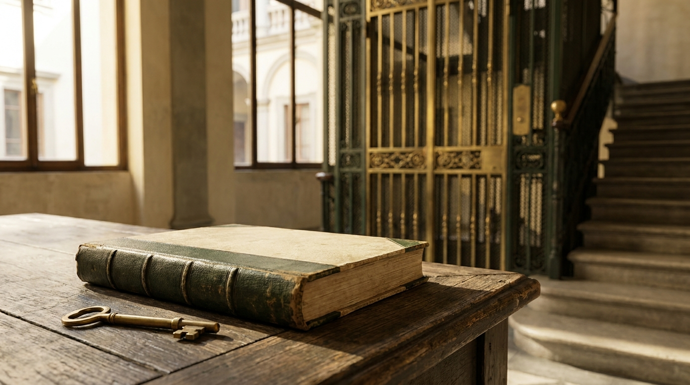

Ascensore in condominio e accessibilità: il decoro non è un limite assoluto
La giurisprudenza di legittimità conferma un orientamento ormai consolidato: il decoro architettonico non può bloccare l'installazione di un ascensore destinato a garantire l'accessibilità a persone con disabilità. Per condomini e amministratori cambiano i criteri di valutazione delle delibere, i quorum applicabili e l'onere della prova sul preteso pregiudizio estetico.

Il caso e l'orientamento di legittimità
La questione è ricorrente: un condomino con disabilità chiede l'installazione di un ascensore per superare le barriere architettoniche dell'edificio; l'assemblea, o una parte dei condomini, oppone il pregiudizio al decoro architettonico del fabbricato. La Corte di Cassazione, Sezione II civile, si è espressa più volte in senso favorevole all'accessibilità, in linea con un orientamento ormai stabile (si veda, tra le altre, Cass. civ., Sez. II, n. 18334/2012 e le pronunce successive in materia di innovazioni agevolate).
Il principio è netto: il decoro architettonico è un limite, ma non un limite assoluto. Va bilanciato con il diritto all'accessibilità, che trova fondamento costituzionale negli artt. 2 e 3 della Costituzione e attuazione nella legislazione speciale.
Inquadramento normativo
La disciplina di riferimento è la L. 13/1989, il cui art. 2 stabilisce che le deliberazioni sulle innovazioni dirette a eliminare le barriere architettoniche sono approvate con maggioranze agevolate rispetto a quelle ordinarie per le innovazioni.
Il quadro si è poi assestato con la riforma del condominio (L. 220/2012), che ha riscritto l'art. 1120 c.c. qualificando come "innovazioni agevolate" quelle volte all'eliminazione delle barriere architettoniche, e con la L. 120/2020, di conversione del cd. decreto Semplificazioni, che ha inciso sui quorum. Per effetto di tali interventi, le innovazioni dirette all'abbattimento delle barriere architettoniche sono deliberabili con la maggioranza degli intervenuti e almeno la metà del valore dell'edificio (501 millesimi). Resta inoltre fermo che, in caso di inerzia o diniego assembleare, il singolo interessato può realizzare l'opera a proprie spese ai sensi dell'art. 2, comma 2, L. 13/1989.
Il criterio del pregiudizio concreto
Il punto centrale, spesso trascurato, è la natura del limite del decoro. La giurisprudenza distingue tra la mera alterazione estetica — fisiologica in qualsiasi intervento su un edificio esistente — e il pregiudizio concreto e rilevante al decoro architettonico, l'unico idoneo a paralizzare l'innovazione.
Ne consegue un'inversione di prospettiva sull'onere della prova: non spetta a chi richiede l'ascensore dimostrare l'assenza di impatto estetico, ma a chi si oppone provare che l'opera determina un deprezzamento apprezzabile o un'alterazione significativa delle linee architettoniche dell'edificio. Una generica contrarietà estetica non è sufficiente.
Il coordinamento tra le fonti va letto in questa chiave: la disciplina speciale (L. 13/1989) e l'art. 1120 c.c. agevolano l'iniziativa; la L. 120/2020 ne abbassa i quorum; il bilanciamento con il decoro resta affidato al criterio del pregiudizio concreto.
Implicazioni pratiche
Per l'amministratore. Una delibera di diniego motivata solo sull'estetica è esposta a impugnazione. Occorre verificare i quorum applicabili e documentare l'eventuale pregiudizio concreto con elementi tecnici, non con affermazioni di principio.
Per il condomino con disabilità (o il familiare). Il diritto all'accessibilità è tutelato anche in caso di inerzia assembleare: l'opera può essere realizzata a proprie spese, occupando le parti comuni nei limiti del rispetto della loro destinazione e della sicurezza.
Per gli altri condomini. L'opera installata a spese del singolo resta a suo carico; chi non ha contribuito potrà però partecipare successivamente all'uso dell'ascensore corrispondendo la quota proporzionale, ai sensi delle regole sull'uso delle cose comuni.
Cosa fare in concreto
- Verificare i quorum applicabili alla delibera alla luce della L. 120/2020, distinguendo le innovazioni agevolate da quelle ordinarie.
- Documentare con perizia tecnica l'eventuale pregiudizio al decoro, qualora si intenda opporsi: le valutazioni generiche non reggono in giudizio.
- Definire per iscritto la ripartizione delle spese, distinguendo l'opera realizzata a carico del singolo dalla successiva partecipazione all'uso degli altri condomini.
- Valutare la fattibilità strutturale dell'intervento, anche in rapporto alla sicurezza e alla destinazione delle parti comuni.
- Prima di procedere con installazioni autonome o con impugnazioni, è opportuno un esame tecnico-giuridico preventivo della singola situazione.
---
Contributo informativo a cura di Tamburro & Partners - Avv. Giuseppe Tamburro. Non costituisce parere legale.
Ogni condominio ha una storia a sé.
Se gestisci un'amministrazione e vuoi un confronto su una specifica questione condominiale, scrivi allo studio. Ti rispondiamo entro un giorno lavorativo.